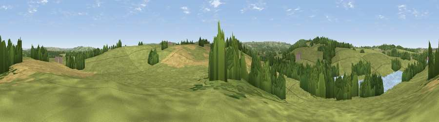

Viewpoint near Closworth
#31759 in England · top 73% of its area beats it · near ClosworthThe view, rendered

A 360° render of this exact spot computed from the terrain model, tree cover and land cover — summer colours, afternoon light, calibrated against photographs of famous viewpoints. Real trees, hedges and buildings will differ in detail.
The panorama
Grey silhouette: terrain skyline in each direction (720 bearings, Earth curvature and refraction included). Dashed green: skyline with trees (+15 m) and buildings (+8 m) as obstacles. Blue strip: how far the ground is visible on each bearing.
Where the view opens
Wedge length = distance to the farthest visible ground on that bearing (vegetation-aware). Rings at 10, 25 and 50 km.
What fills the view
61% grassland · 17% woodland · 15% cropland · 8% water
Angular shares of the visible panorama (visual magnitude), not map area. Landscape diversity 0.48 (0–1 Shannon).
Key numbers
More beautiful places nearby
The staircase of upgrades: each row has a higher view potential than everything closer. Driving times are estimates from straight-line distance, calibrated against real road routing — check an actual route before setting out.
| Place | Direction | Drive | Score |
|---|---|---|---|
| Abbot's Hill | W · 2 km | ~5 min | 55.1 |
| Viewpoint near Halstock | WSW · 2 km | ~6 min | 56.7 |
| Viewpoint near East Coker | NW · 3 km | ~7 min | 59.9 |
| Viewpoint near West Coker | NW · 5 km | ~10 min | 60.3 |
| Viewpoint near Chetnole | SE · 6 km | ~12 min | 67.4 |
| Viewpoint near Chedington | WSW · 7 km | ~14 min | 68.5 |
| Viewpoint near Chedington | SW · 7 km | ~15 min | 69.7 |
| Viewpoint near Chedington | SW · 7 km | ~15 min | 70.7 |
50.88886, -2.63935 · source: screening · position refined by local search. Computed location — check access rights before visiting.